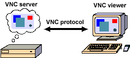

VNC - How it works
|
|
VNC - How it works
|
IndexThe VNC ProtocolRectangular updates Adaptive update protocol Input protocol Connection Setup and Shutdown VNC Clients VNC Servers The VNC ProtocolThe VNC protocol is a simple protocol for remote access to graphical user interfaces. It is based on the concept of a remote framebuffer or RFB. In the past we have tended to refer to the VNC protocol as the RFB protocol, so you may have seen this term in other publications. The protocol simply allows a server to update the framebuffer displayed on a viewer. Because it works at the framebuffer level it is potentially applicable to all operating systems, windowing systems and applications. This includes X/Unix, Windows, and Macintosh, but might also include PDAs, and indeed any device with some form of communications link. The protocol will operate over any reliable transport such as TCP/IP. This is truly a "thin-client" protocol: it has been designed to make very few requirements of the viewer. In this way, clients can run on the widest range of hardware, and the task of implementing a client is made as simple as possible. Rectangular updatesThe display side of the protocol is based around a single graphics primitive: "put a rectangle of pixel data at a given x,y position". This might seem an inefficient way of drawing arbitrary user interface components. But because we have a variety of different encoding schemes for the pixel data, we can select the appropriate scheme for each rectangle we send, and make the most of network bandwidth, client drawing speed and server processing speed.The lowest common denominator is the so-called raw encoding, where the rectangle is simply pixel data sent in left-to-right scanline order. All clients and servers must support this encoding. However, the encodings actually used on any given VNC connection can be negotiated according to the abilities of the server, the client, and the connection between the two. The copy rectangle encoding, for example, is very simple and efficient and can be used when the client already has the same pixel data elsewhere in its framebuffer. The server simply sends an X,Y coordinate giving the position from which the client can copy the rectangle of pixel data. This means that operations such as dragging or scrolling a window, which involve substantial changes to the screen, may only require a few bytes. Most clients will support this encoding, since it is generally simple to implement and saves bandwidth. A typical workstation desktop has large areas of solid colour and of text. Some of our most effective encodings take advantage of this by efficiently describing rectangles consisting of one majority (background) colour and 'sub-rectangles' of different colours. There are numerous other possible schemes. We might use a JPEG encoding for still images or MPEG for efficient transmission of moving images. An encoding which uses some kind of caching of pixel data would be good for rendering text, where the same character is drawn in the same font multiple times. Subsequent occurrences of the same character would be encoded simply by reference to the first occurrence. Adaptive update protocolA sequence of these rectangles makes a framebuffer update (or simply update). An update represents a change from one valid framebuffer state to another, so in some ways is similar to a frame of video, but it is usually only a small area of the framebuffer that will be affected by a given update. Each rectangle may be encoded using a different scheme. The server can therefore choose the best encoding for the particular screen content being transmitted and the network bandwidth available.The update protocol is demand-driven by the client. That is, an update is only sent by the server in response to an explicit request from the client. This gives the protocol an adaptive quality. The slower the client and the network are, the lower the rate of updates becomes. Each update incorporates all the changes to the 'screen' since the last client request. With a slow client and/or network, transient states of the framebuffer are ignored, resulting in reduced network traffic and less drawing for the client. This also improves the apparent response speed. Input protocolThe input side of the protocol is based on a standard workstation model of a keyboard and multi-button pointing device. Input events are sent to the server by the client whenever the user presses a key or pointer button, or whenever the pointing device is moved. These input events can also be synthesised from other non-standard I/O devices.Connection Setup and ShutdownWhen the connection between a client and a server is first established, the server begins by requesting authentication from the client using a challenge-response scheme, which typically results in the user being prompted for a password at the client end. The server and client then exchange messages to negotiate desktop size, pixel format, and the encoding schemes to be used. The client then requests an update for the entire screen, and the session begins. Because of the stateless nature of the client, either side can close the connection at any time without adverse consequences.VNC ClientsWriting an VNC viewer is a simple task, as it should be for any thin-client system. It requires only a reliable transport (usually TCP/IP), and a way of displaying pixels (either directly writing to the framebuffer, or going through a windowing system). VNC clients exist for all flavours of Unix, Windows, Macintosh, Java and for smaller handeld appliances.VNC ServersWriting an VNC server is slightly harder than writing a client for a number of reasons. The protocol is designed to make the client as simple as possible, so it is usually up to the server to perform any necessary translations. For example, the server must provide pixel data in the format the client wants. There are servers Unix, Windows and Macintosh platforms A Unix machine can run a number of Xvnc servers for different users, each of which represents a distinct VNC desktop. Each VNC desktop is like a virtual X display, with a root window on which several X applications can be displayed. The Windows server (WinVNC) is a little more difficult to create, because there are fewer places to insert hooks into the system to monitor display updates, and a less clearly-defined model of multiuser operation. Servers simply mirrors the real display to a remote client, which means that the server is not 'multiuser'. It does, however, provide the primary user of a PC with remote access to their desktop. |
| Copyright © 2002-2004 RealVNC Ltd | RealVNC and the RealVNC logos are trademarks of RealVNC Ltd |